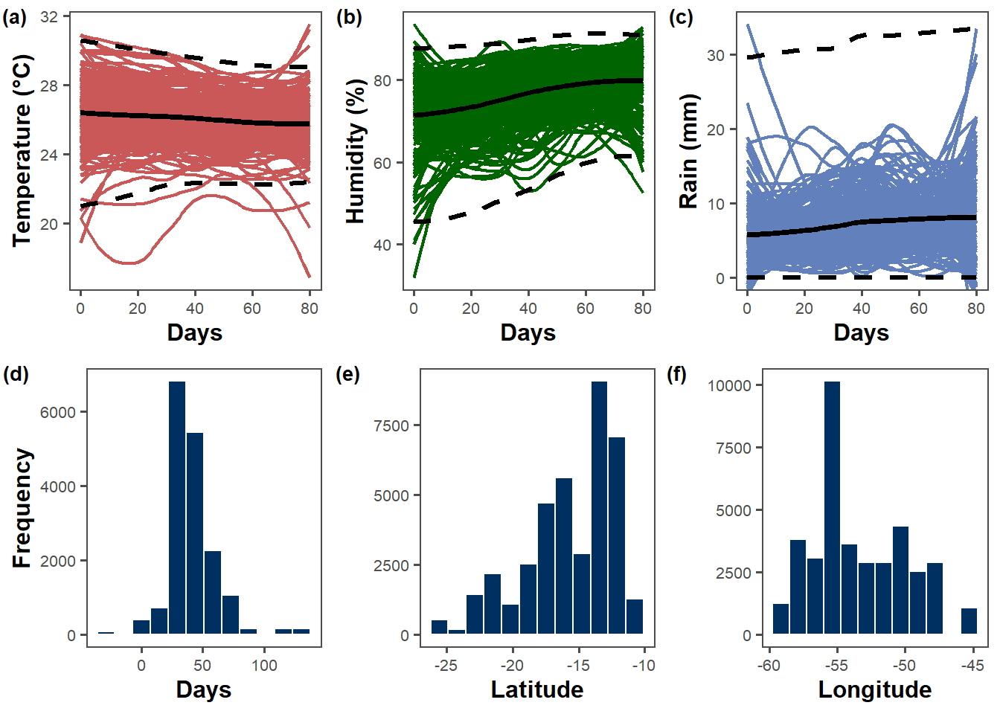
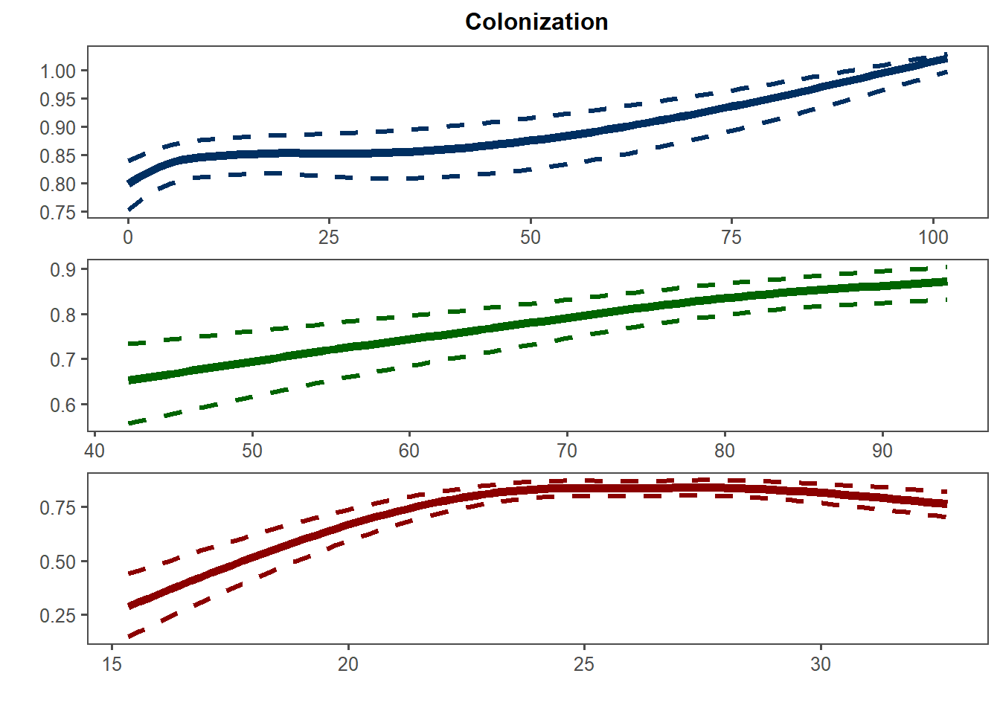

library(dplyr)
library(purrr)
library(gsheet)
library(raster)
library(ncdf4)
library(lubridate)
library(readxl)
library(writexl)
library(tidyverse)
library(ggplot2)
library(INLA)
library(caret)Packages
ma2 <- gsheet2tbl("https://docs.google.com/spreadsheets/d/1j0WZXtJsSMN1MAbmkppnCMnr5d9LnsxV/edit?usp=sharing&ouid=112586075609758894128&rtpof=true&sd=true")Precipitation
# 1. Lendo a planilha de municípios com data de plantio
ma2 <- gsheet2tbl("https://docs.google.com/spreadsheets/d/1j0WZXtJsSMN1MAbmkppnCMnr5d9LnsxV/edit?usp=sharing&ouid=112586075609758894128&rtpof=true&sd=true")
ma2_df <- as.data.frame(ma2)
ma2_df$planting_date <- as.Date(ma2_df$planting_date, format = "%Y-%m-%d")
# 2. Adicionando colunas para 90 dias antes e depois da data de plantio
ma3 <- ma2_df %>%
mutate(
pd_minus90 = planting_date - 90, # 90 dias antes do plantio
pd90 = planting_date + 90 # 90 dias após o plantio
)
# 3. Caminho para o arquivo NetCDF
netcdf_path <- "C:/Users/ricar/Documents/Extract_Xavier/code/data/pr_20010101_20240320_BR-DWGD_UFES_UTEXAS_v_3.2.3.nc"
# 4. Função para verificar e interpretar as datas no NetCDF considerando "hours since"
get_nc_dates <- function(netcdf_path) {
nc_data <- nc_open(netcdf_path)
# Lendo a variável de tempo e sua unidade
time_var <- ncvar_get(nc_data, "time")
time_units <- ncatt_get(nc_data, "time", "units")$value
print(paste("Unidade de tempo no NetCDF:", time_units))
# Extraindo a origem da unidade de tempo e verificando o formato
if (grepl("hours since", time_units)) {
origin_date <- as.POSIXct(sub("hours since ", "", time_units), tz = "UTC")
nc_dates <- origin_date + as.difftime(time_var, units = "hours")
} else {
stop("Unidade de tempo inesperada:", time_units)
}
# Fechando o arquivo NetCDF
nc_close(nc_data)
return(as.Date(nc_dates))
}
# 5. Chamando a função para obter as datas
nc_dates <- get_nc_dates(netcdf_path)
# 6. Função para extrair dados do NetCDF para uma linha
get_br_dwgd_data <- function(row, line_number, netcdf_path, nc_dates) {
# Abrindo o arquivo NetCDF
nc_data <- nc_open(netcdf_path)
# Extraindo variáveis de interesse
lon <- row$lon
lat <- row$lat
start_date <- row$pd_minus90 # Início: 90 dias antes do plantio
end_date <- row$pd90 # Fim: 90 dias após o plantio
# Gerando sequência de datas e comparando com o NetCDF
date_seq <- seq.Date(start_date, end_date, by = "day")
date_indices <- match(date_seq, nc_dates)
# Removendo índices de datas inexistentes
date_indices <- date_indices[!is.na(date_indices)]
# Caso não haja datas válidas, retornar NULL
if (length(date_indices) == 0) {
message("Nenhuma data correspondente encontrada para linha ", line_number, " (", row$location, ")")
nc_close(nc_data)
return(NULL)
}
# Extraindo dados de precipitação para as coordenadas e datas específicas
lon_idx <- which.min(abs(ncvar_get(nc_data, "longitude") - lon))
lat_idx <- which.min(abs(ncvar_get(nc_data, "latitude") - lat))
precip_data <- sapply(date_indices, function(i) {
ncvar_get(nc_data, "pr", start = c(lon_idx, lat_idx, i), count = c(1, 1, 1))
})
# Fechando o arquivo NetCDF
nc_close(nc_data)
# Se a extração de precip_data não retornar dados, retornar NULL
if (length(precip_data) == 0 || all(is.na(precip_data))) {
message("Nenhum dado de precipitação encontrado para linha ", line_number, " (", row$location, ")")
return(NULL)
}
# Criando um dataframe com os resultados e informações adicionais
result <- data.frame(
date = date_seq[!is.na(date_indices)],
precipitation = precip_data,
study = row$study,
location = row$location,
state = row$state,
year = format(row$planting_date, "%Y"),
planting_date = row$planting_date,
mean_sev = row$mean_sev,
lat = row$lat,
lon = row$lon,
level = row$level
)
return(result)
}
# 7. Iterando pelas linhas da planilha e extraindo os dados do NetCDF
box <- ma3 %>%
split(1:nrow(.)) %>%
map2_dfr(1:nrow(ma3), ~ get_br_dwgd_data(.x, .y, netcdf_path, nc_dates), .id = "id")
# 8. Visualizando o resultado final
print(box)
# 9. Salvando o resultado em um arquivo Excel
#write_xlsx(box, "data/br_dwgd_prec.xlsx")prec = read_xlsx("data/br_dwgd_prec.xlsx")
unique(prec$year)
prec = prec %>%
filter(!state %in% c("SP"))
prec$date = as.Date(prec$date)
prec$study = as.factor(prec$study)
prec$planting_date = as.Date(prec$planting_date)
# Suponha que seu dataframe 'ma4' já está carregado e que a coluna 'days' está corretamente calculada
prec <- prec %>%
mutate(
days =as.numeric(date - planting_date))# %>%
#filter(days >= 0)Maximum temperature
library(dplyr)
library(ncdf4)
library(purrr)
library(readr)
library(writexl)
# 1. Lendo a planilha de municípios com data de plantio
ma2 <- gsheet2tbl("https://docs.google.com/spreadsheets/d/1j0WZXtJsSMN1MAbmkppnCMnr5d9LnsxV/edit?usp=sharing&ouid=112586075609758894128&rtpof=true&sd=true")
ma2_df <- as.data.frame(ma2)
ma2_df$planting_date <- as.Date(ma2_df$planting_date, format = "%Y-%m-%d")
# 2. Adicionando colunas para 90 dias antes e depois da data de plantio
ma3 <- ma2_df %>%
mutate(
pd_minus90 = planting_date - 90, # 90 dias antes do plantio
pd90 = planting_date + 90 # 90 dias após o plantio
)
# 3. Caminho para o arquivo NetCDF
netcdf_path <- "C:/Users/ricar/Documents/Extract_Xavier/code/data/Tmax_20010101_20240320_BR-DWGD_UFES_UTEXAS_v_3.2.3.nc"
# 4. Função para verificar e interpretar as datas no NetCDF considerando "hours since"
get_nc_dates <- function(netcdf_path) {
nc_data <- nc_open(netcdf_path)
# Lendo a variável de tempo e sua unidade
time_var <- ncvar_get(nc_data, "time")
time_units <- ncatt_get(nc_data, "time", "units")$value
print(paste("Unidade de tempo no NetCDF:", time_units))
# Extraindo a origem da unidade de tempo e verificando o formato
if (grepl("hours since", time_units)) {
origin_date <- as.POSIXct(sub("hours since ", "", time_units), tz = "UTC")
nc_dates <- origin_date + as.difftime(time_var, units = "hours")
} else {
stop("Unidade de tempo inesperada:", time_units)
}
# Fechando o arquivo NetCDF
nc_close(nc_data)
return(as.Date(nc_dates))
}
# 5. Chamando a função para obter as datas
nc_dates <- get_nc_dates(netcdf_path)
# 6. Função para extrair dados do NetCDF para uma linha
get_br_dwgd_data <- function(row, line_number, netcdf_path, nc_dates) {
# Abrindo o arquivo NetCDF
nc_data <- nc_open(netcdf_path)
# Extraindo variáveis de interesse
lon <- row$lon
lat <- row$lat
start_date <- row$pd_minus90 # Início: 90 dias antes do plantio
end_date <- row$pd90 # Fim: 90 dias após o plantio
# Gerando sequência de datas e comparando com o NetCDF
date_seq <- seq.Date(start_date, end_date, by = "day")
date_indices <- match(date_seq, nc_dates)
# Removendo índices de datas inexistentes
date_indices <- date_indices[!is.na(date_indices)]
# Caso não haja datas válidas, retornar NULL
if (length(date_indices) == 0) {
message("Nenhuma data correspondente encontrada para linha ", line_number, " (", row$location, ")")
nc_close(nc_data)
return(NULL)
}
# Extraindo dados de Tmax para as coordenadas e datas específicas
lon_idx <- which.min(abs(ncvar_get(nc_data, "longitude") - lon))
lat_idx <- which.min(abs(ncvar_get(nc_data, "latitude") - lat))
tmax_data <- sapply(date_indices, function(i) {
ncvar_get(nc_data, "Tmax", start = c(lon_idx, lat_idx, i), count = c(1, 1, 1))
})
# Fechando o arquivo NetCDF
nc_close(nc_data)
# Se a extração de tmax_data não retornar dados, retornar NULL
if (length(tmax_data) == 0 || all(is.na(tmax_data))) {
message("Nenhum dado de Tmax encontrado para linha ", line_number, " (", row$location, ")")
return(NULL)
}
# Criando um dataframe com os resultados e informações adicionais
result <- data.frame(
date = date_seq[!is.na(date_indices)],
tmax = tmax_data,
study = row$study,
location = row$location,
state = row$state,
year = format(row$planting_date, "%Y"),
planting_date = row$planting_date,
mean_sev = row$mean_sev,
lat = row$lat,
lon = row$lon,
level = row$level
)
return(result)
}
# 7. Iterando pelas linhas da planilha e extraindo os dados do NetCDF
box <- ma3 %>%
split(1:nrow(.)) %>%
map2_dfr(1:nrow(ma3), ~ get_br_dwgd_data(.x, .y, netcdf_path, nc_dates), .id = "id")
# 8. Visualizando o resultado final
print(box)
# 9. Salvando o resultado em um arquivo Excel
write_xlsx(box, "data/br_dwgd_tmax.xlsx")tmax = read_xlsx("data/br_dwgd_tmax.xlsx")
tmax = tmax %>%
filter(!state %in% c("SP"))
tmax$date = as.Date(tmax$date)
tmax$study = as.factor(tmax$study)
tmax$planting_date = as.Date(tmax$planting_date)
# Suponha que seu dataframe 'ma4' já está carregado e que a coluna 'days' está corretamente calculada
tmax <- tmax %>%
mutate(
days =as.numeric(date - planting_date)
)Minimum temperature
library(dplyr)
library(ncdf4)
library(purrr)
library(readr)
library(writexl)
# 1. Lendo a planilha de municípios com data de plantio
ma2 <- gsheet2tbl("https://docs.google.com/spreadsheets/d/1j0WZXtJsSMN1MAbmkppnCMnr5d9LnsxV/edit?usp=sharing&ouid=112586075609758894128&rtpof=true&sd=true")
ma2_df <- as.data.frame(ma2)
ma2_df$planting_date <- as.Date(ma2_df$planting_date, format = "%Y-%m-%d")
# 2. Adicionando colunas para 90 dias antes e depois da data de plantio
ma3 <- ma2_df %>%
mutate(
pd_minus90 = planting_date - 90, # 90 dias antes do plantio
pd90 = planting_date + 90 # 90 dias após o plantio
)
# 3. Caminho para o arquivo NetCDF
netcdf_path <- "C:/Users/ricar/Documents/Extract_Xavier/code/data/Tmin_20010101_20240320_BR-DWGD_UFES_UTEXAS_v_3.2.3.nc"
# 4. Função para verificar e interpretar as datas no NetCDF considerando "hours since"
get_nc_dates <- function(netcdf_path) {
nc_data <- nc_open(netcdf_path)
# Lendo a variável de tempo e sua unidade
time_var <- ncvar_get(nc_data, "time")
time_units <- ncatt_get(nc_data, "time", "units")$value
print(paste("Unidade de tempo no NetCDF:", time_units))
# Extraindo a origem da unidade de tempo e verificando o formato
if (grepl("hours since", time_units)) {
origin_date <- as.POSIXct(sub("hours since ", "", time_units), tz = "UTC")
nc_dates <- origin_date + as.difftime(time_var, units = "hours")
} else {
stop("Unidade de tempo inesperada:", time_units)
}
# Fechando o arquivo NetCDF
nc_close(nc_data)
return(as.Date(nc_dates))
}
# 5. Chamando a função para obter as datas
nc_dates <- get_nc_dates(netcdf_path)
# 6. Função para extrair dados do NetCDF para uma linha
get_br_dwgd_data <- function(row, line_number, netcdf_path, nc_dates) {
# Abrindo o arquivo NetCDF
nc_data <- nc_open(netcdf_path)
# Extraindo variáveis de interesse
lon <- row$lon
lat <- row$lat
start_date <- row$pd_minus90 # Início: 90 dias antes do plantio
end_date <- row$pd90 # Fim: 90 dias após o plantio
# Gerando sequência de datas e comparando com o NetCDF
date_seq <- seq.Date(start_date, end_date, by = "day")
date_indices <- match(date_seq, nc_dates)
# Removendo índices de datas inexistentes
date_indices <- date_indices[!is.na(date_indices)]
# Caso não haja datas válidas, retornar NULL
if (length(date_indices) == 0) {
message("Nenhuma data correspondente encontrada para linha ", line_number, " (", row$location, ")")
nc_close(nc_data)
return(NULL)
}
# Extraindo dados de Tmin para as coordenadas e datas específicas
lon_idx <- which.min(abs(ncvar_get(nc_data, "longitude") - lon))
lat_idx <- which.min(abs(ncvar_get(nc_data, "latitude") - lat))
tmin_data <- sapply(date_indices, function(i) {
ncvar_get(nc_data, "Tmin", start = c(lon_idx, lat_idx, i), count = c(1, 1, 1))
})
# Fechando o arquivo NetCDF
nc_close(nc_data)
# Se a extração de tmin_data não retornar dados, retornar NULL
if (length(tmin_data) == 0 || all(is.na(tmin_data))) {
message("Nenhum dado de Tmin encontrado para linha ", line_number, " (", row$location, ")")
return(NULL)
}
# Criando um dataframe com os resultados e informações adicionais
result <- data.frame(
date = date_seq[!is.na(date_indices)],
tmin = tmin_data,
study = row$study,
location = row$location,
state = row$state,
year = format(row$planting_date, "%Y"),
planting_date = row$planting_date,
mean_sev = row$mean_sev,
lat = row$lat,
lon = row$lon,
level = row$level
)
return(result)
}
# 7. Iterando pelas linhas da planilha e extraindo os dados do NetCDF
box <- ma3 %>%
split(1:nrow(.)) %>%
map2_dfr(1:nrow(ma3), ~ get_br_dwgd_data(.x, .y, netcdf_path, nc_dates), .id = "id")
# 8. Visualizando o resultado final
print(box)
# 9. Salvando o resultado em um arquivo Excel
write_xlsx(box, "data/br_dwgd_tmin.xlsx")tmin = read_xlsx("data/br_dwgd_tmin.xlsx")
tmin = tmin %>%
filter(!state %in% c("SP"))
tmin$date = as.Date(tmin$date)
tmin$study = as.factor(tmin$study)
tmin$planting_date = as.Date(tmin$planting_date)
# Suponha que seu dataframe 'ma4' já está carregado e que a coluna 'days' está corretamente calculada
tmin <- tmin %>%
mutate(
days =as.numeric(date - planting_date)
)Relative humidity
library(dplyr)
library(ncdf4)
library(purrr)
library(readr)
library(writexl)
# 1. Lendo a planilha de municípios com data de plantio
ma2 <- gsheet2tbl("https://docs.google.com/spreadsheets/d/1j0WZXtJsSMN1MAbmkppnCMnr5d9LnsxV/edit?usp=sharing&ouid=112586075609758894128&rtpof=true&sd=true")
ma2_df <- as.data.frame(ma2)
ma2_df$planting_date <- as.Date(ma2_df$planting_date, format = "%Y-%m-%d")
# 2. Adicionando colunas para 90 dias antes e depois da data de plantio
ma3 <- ma2_df %>%
mutate(
pd_minus90 = planting_date - 90, # 90 dias antes do plantio
pd90 = planting_date + 90 # 90 dias após o plantio
)
# 3. Caminho para o arquivo NetCDF
netcdf_path <- "C:/Users/ricar/Documents/Extract_Xavier/code/data/RH_20010101_20240320_BR-DWGD_UFES_UTEXAS_v_3.2.3.nc"
# 4. Função para verificar e interpretar as datas no NetCDF considerando "hours since"
get_nc_dates <- function(netcdf_path) {
nc_data <- nc_open(netcdf_path)
# Lendo a variável de tempo e sua unidade
time_var <- ncvar_get(nc_data, "time")
time_units <- ncatt_get(nc_data, "time", "units")$value
print(paste("Unidade de tempo no NetCDF:", time_units))
# Extraindo a origem da unidade de tempo e verificando o formato
if (grepl("hours since", time_units)) {
origin_date <- as.POSIXct(sub("hours since ", "", time_units), tz = "UTC")
nc_dates <- origin_date + as.difftime(time_var, units = "hours")
} else {
stop("Unidade de tempo inesperada:", time_units)
}
# Fechando o arquivo NetCDF
nc_close(nc_data)
return(as.Date(nc_dates))
}
# 5. Chamando a função para obter as datas
nc_dates <- get_nc_dates(netcdf_path)
# 6. Função para extrair dados do NetCDF para uma linha
get_br_dwgd_data <- function(row, line_number, netcdf_path, nc_dates) {
# Abrindo o arquivo NetCDF
nc_data <- nc_open(netcdf_path)
# Extraindo variáveis de interesse
lon <- row$lon
lat <- row$lat
start_date <- row$pd_minus90 # Início: 90 dias antes do plantio
end_date <- row$pd90 # Fim: 90 dias após o plantio
# Gerando sequência de datas e comparando com o NetCDF
date_seq <- seq.Date(start_date, end_date, by = "day")
date_indices <- match(date_seq, nc_dates)
# Removendo índices de datas inexistentes
date_indices <- date_indices[!is.na(date_indices)]
# Caso não haja datas válidas, retornar NULL
if (length(date_indices) == 0) {
message("Nenhuma data correspondente encontrada para linha ", line_number, " (", row$location, ")")
nc_close(nc_data)
return(NULL)
}
# Extraindo dados de RH para as coordenadas e datas específicas
lon_idx <- which.min(abs(ncvar_get(nc_data, "longitude") - lon))
lat_idx <- which.min(abs(ncvar_get(nc_data, "latitude") - lat))
rh_data <- sapply(date_indices, function(i) {
ncvar_get(nc_data, "RH", start = c(lon_idx, lat_idx, i), count = c(1, 1, 1))
})
# Fechando o arquivo NetCDF
nc_close(nc_data)
# Se a extração de rh_data não retornar dados, retornar NULL
if (length(rh_data) == 0 || all(is.na(rh_data))) {
message("Nenhum dado de RH encontrado para linha ", line_number, " (", row$location, ")")
return(NULL)
}
# Criando um dataframe com os resultados e informações adicionais
result <- data.frame(
date = date_seq[!is.na(date_indices)],
rh = rh_data,
study = row$study,
location = row$location,
state = row$state,
year = format(row$planting_date, "%Y"),
planting_date = row$planting_date,
mean_sev = row$mean_sev,
lat = row$lat,
lon = row$lon,
level = row$level
)
return(result)
}
# 7. Iterando pelas linhas da planilha e extraindo os dados do NetCDF
box <- ma3 %>%
split(1:nrow(.)) %>%
map2_dfr(1:nrow(ma3), ~ get_br_dwgd_data(.x, .y, netcdf_path, nc_dates), .id = "id")
# 8. Visualizando o resultado final
print(box)
# 9. Salvando o resultado em um arquivo Excel
write_xlsx(box, "data/br_dwgd_rh.xlsx")rh = read_xlsx("data/br_dwgd_rh.xlsx")
rh = rh %>%
filter(!state %in% c("SP"))
rh$date = as.Date(rh$date)
rh$study = as.factor(rh$study)
rh$planting_date = as.Date(rh$planting_date)
# Suponha que seu dataframe 'ma4' já está carregado e que a coluna 'days' está corretamente calculada
rh <- rh %>%
mutate(
days =as.numeric(date - planting_date)
)
rhJoining
weather_data = prec
weather_data$rh = rh$rh
weather_data$tmax = tmax$tmax
weather_data$tmin = tmin$tmin
weather_data[,3] = NULL
weather_data$prec = prec$precipitationcolnames(weather_data) = c("id","wd90", "study","location","state","year","planting_date","mean_sev","lat","lon","level","days","RH2M","T2M_MAX","T2M_MIN","PRECTOTCORR")#write_xlsx(weather_data, "data/weather_data.xlsx")
weather_data = read_xlsx("data/weather_data.xlsx")
weather_data$mean_sev = weather_data$mean_sev/100
#weather_data <- read_xlsx("data/weather_nasa.xlsx")weather_data = weather_data %>%
mutate(T2M = (T2M_MAX+T2M_MIN)/2) #%>%
#mutate(DPD = T2M - ((112 + 0.9*T2M)*RH2M^0.125 - 112 + 0.1*T2M))
# Parâmetros da equação de Magnus-Tetens
a <- 17.27
b <- 237.7
# Cálculo do ponto de orvalho (Td)
alpha <- (a * weather_data$T2M) / (b + weather_data$T2M) + log(weather_data$RH2M / 100)
weather_data$Td <- (b * alpha) / (a - alpha)
# Cálculo do DPD
weather_data$DPD <- weather_data$T2M - weather_data$TdWindown sowing
weather_data$planting_date = as.Date(weather_data$planting_date)
weather_data <- weather_data %>%
mutate(
# Criando a data permitida diretamente com base no estado
allowed_date = case_when(
state == "MT" ~ as.Date(paste0(format(planting_date, "%Y"), "-09-16")),
state == "MS" ~ as.Date(paste0(format(planting_date, "%Y"), "-09-16")),
state == "GO" ~ as.Date(paste0(format(planting_date, "%Y"), "-09-25")),
state == "PR" ~ as.Date(paste0(format(planting_date, "%Y"), "-09-11")),
state == "TO" ~ as.Date(paste0(format(planting_date, "%Y"), "-10-01")),
state == "DF" ~ as.Date(paste0(format(planting_date, "%Y"), "-10-01")),
state == "BA" ~ as.Date(paste0(format(planting_date, "%Y"), "-10-01")),
state == "MG" ~ as.Date(paste0(format(planting_date, "%Y"), "-10-01"))
),
# Ajustando o ano da allowed_date para casos de janeiro e fevereiro
allowed_date = if_else(
format(planting_date, "%m") %in% c("01", "02"),
as.Date(paste0(as.numeric(format(planting_date, "%Y")) - 1, "-", format(allowed_date, "%m-%d"))),
allowed_date
),
# Calculando a diferença em dias
days_difference = as.numeric(planting_date - allowed_date)
)
# Visualizar resultado
print(weather_data)# A tibble: 38,553 × 21
id wd90 study location state year planting_date mean_sev
<chr> <dttm> <chr> <chr> <chr> <chr> <date> <dbl>
1 1 2012-07-20 00:00:00 1 Campo Ver… MT 2012 2012-10-18 0.4
2 1 2012-07-21 00:00:00 1 Campo Ver… MT 2012 2012-10-18 0.4
3 1 2012-07-22 00:00:00 1 Campo Ver… MT 2012 2012-10-18 0.4
4 1 2012-07-23 00:00:00 1 Campo Ver… MT 2012 2012-10-18 0.4
5 1 2012-07-24 00:00:00 1 Campo Ver… MT 2012 2012-10-18 0.4
6 1 2012-07-25 00:00:00 1 Campo Ver… MT 2012 2012-10-18 0.4
7 1 2012-07-26 00:00:00 1 Campo Ver… MT 2012 2012-10-18 0.4
8 1 2012-07-27 00:00:00 1 Campo Ver… MT 2012 2012-10-18 0.4
9 1 2012-07-28 00:00:00 1 Campo Ver… MT 2012 2012-10-18 0.4
10 1 2012-07-29 00:00:00 1 Campo Ver… MT 2012 2012-10-18 0.4
# ℹ 38,543 more rows
# ℹ 13 more variables: lat <dbl>, lon <dbl>, level <chr>, days <dbl>,
# RH2M <dbl>, T2M_MAX <dbl>, T2M_MIN <dbl>, PRECTOTCORR <dbl>, T2M <dbl>,
# Td <dbl>, DPD <dbl>, allowed_date <date>, days_difference <dbl>weather_data$year1 <- as.numeric(factor(weather_data$year))
weather_data$state1 <- as.numeric(factor(weather_data$state))
weather_data$location1 <- as.numeric(factor(weather_data$location))
weather_data$level1 <- as.numeric(factor(weather_data$level))
weather_data %>%
filter(days_difference < 0)unique(weather_data$level1)[1] 2 1weather_data %>%
ggplot(aes(days_difference))+
geom_histogram()`stat_bin()` using `bins = 30`. Pick better value with `binwidth`.
Distribution
# RH2M
RH2M_day <- weather_data %>%
filter(!state =="SP") %>%
filter(days >= 0 & days <= 80) %>%
group_by(days) %>%
summarise(mean_RH2M = mean(RH2M, na.rm = TRUE),
up_95 = quantile(RH2M, 0.975),
low_95 = quantile(RH2M, 0.025))
RH2M_g = weather_data %>%
filter(!state =="SP") %>%
ggplot()+ ##b4e4c0
geom_smooth(aes(days,RH2M, group = id),se = F, color = "darkgreen", size = .8, size = 1.0)+
geom_smooth(data = RH2M_day, aes(x = days, y = mean_RH2M), color = "black", size = 1.4)+
geom_smooth(data = RH2M_day, aes(x = days, y = up_95), color = "black", size = 1.2, linetype = "dashed", se = F)+
geom_smooth(data = RH2M_day, aes(x = days, y = low_95),
color = "black", size = 1.2, linetype = "dashed", se = F)+
scale_x_continuous(breaks = c(0, 20, 40, 60, 80), limits = c(0, 80))+
ggthemes::theme_few()+
theme(text = element_text(size = 10),
axis.title = element_text(face = "bold", size = 12))+
labs(x = "Days",
y = "Humidity (%)")Warning: Duplicated aesthetics after name standardisation: sizeWarning: Using `size` aesthetic for lines was deprecated in ggplot2 3.4.0.
ℹ Please use `linewidth` instead.# T2M_MAX
T2M_MAX_day <- weather_data %>%
filter(!state =="SP") %>%
filter(days >= 0 & days <= 80) %>%
group_by(days) %>%
summarise(mean_T2M_MAX = mean(T2M_MAX, na.rm = TRUE),
up_95 = quantile(T2M_MAX, 0.975),
low_95 = quantile(T2M_MAX, 0.025))
T2M_MAX_g = weather_data %>%
filter(!state =="SP") %>%
ggplot()+
geom_smooth(aes(days,T2M_MAX, group = id),se = F, color = "grey", size = .8)+
geom_smooth(data = T2M_MAX_day, aes(x = days, y = mean_T2M_MAX), color = "black", size = 2)+
geom_smooth(data = T2M_MAX_day, aes(x = days, y = up_95), color = "black", size = 1.4, linetype = "dashed", se = F)+
geom_smooth(data = T2M_MAX_day, aes(x = days, y = low_95),
color = "black", size = 1.4, linetype = "dashed", se = F)+
scale_x_continuous(breaks = c(0, 20, 40, 60, 80), limits = c(0, 80))+
ggthemes::theme_few()+
theme(text = element_text(size = 10, face = "bold"))+
labs(x = "Days",
y = "Max (°C)")
# T2M_MIN
T2M_MIN_day <- weather_data %>%
filter(!state =="SP") %>%
filter(days >= 0 & days <= 80) %>%
group_by(days) %>%
summarise(mean_T2M_MIN = mean(T2M_MIN, na.rm = TRUE),
up_95 = quantile(T2M_MIN, 0.975),
low_95 = quantile(T2M_MIN, 0.025))
T2M_MIN_g = weather_data %>%
filter(!state =="SP") %>%
ggplot()+
geom_smooth(aes(days,T2M_MIN, group = id),se = F, color = "grey", size = .8)+
geom_smooth(data = T2M_MIN_day, aes(x = days, y = mean_T2M_MIN), color = "black", size = 2)+
geom_smooth(data = T2M_MIN_day, aes(x = days, y = up_95), color = "black", size = 1.4, linetype = "dashed", se = F)+
geom_smooth(data = T2M_MIN_day, aes(x = days, y = low_95),
color = "black", size = 1.4, linetype = "dashed", se = F)+
scale_x_continuous(breaks = c(0, 20, 40, 60, 80), limits = c(0, 80))+
ggthemes::theme_few()+
theme(text = element_text(size = 10, face = "bold"))+
labs(x = "Days",
y = "Min (°C)")
# T2M
T2M_day <- weather_data %>%
filter(!state =="SP") %>%
filter(days >= 0 & days <= 80) %>%
group_by(days) %>%
summarise(mean_T2M = mean(T2M, na.rm = TRUE),
up_95 = quantile(T2M, 0.975),
low_95 = quantile(T2M, 0.025))
T2M_g = weather_data %>%
filter(!state =="SP") %>%
ggplot()+
geom_smooth(aes(days,T2M, group = id),se = F, color = "#ca5858", size = .8,, size = 1.0)+
geom_smooth(data = T2M_day, aes(x = days, y = mean_T2M), color = "black", size = 1.4)+
geom_smooth(data = T2M_day, aes(x = days, y = up_95), color = "black", size = 1.2, linetype = "dashed", se = F)+
geom_smooth(data = T2M_day, aes(x = days, y = low_95),
color = "black", size = 1.2, linetype = "dashed", se = F)+
scale_x_continuous(breaks = c(0, 20, 40, 60, 80), limits = c(0, 80))+
ggthemes::theme_few()+
theme(text = element_text(size = 10),
axis.title = element_text(face = "bold", size = 12))+
labs(x = "Days",
y = "Temperature (°C)")Warning: Duplicated aesthetics after name standardisation: size# Rain
PRECTOTCORR_day <- weather_data %>%
filter(!state =="SP") %>%
filter(days >= 0 & days <= 80) %>%
group_by(days) %>%
summarise(mean_PRECTOTCORR = mean(PRECTOTCORR, na.rm = TRUE),
up_95 = quantile(PRECTOTCORR, 0.975),
low_95 = quantile(PRECTOTCORR, 0.025))
RAIN_g = weather_data %>%
filter(!state =="SP") %>%
ggplot()+
geom_smooth(aes(days,PRECTOTCORR, group = id),se = F, color = "#6280bc", size = .8, size = 1.0)+
geom_smooth(data = PRECTOTCORR_day, aes(x = days, y = mean_PRECTOTCORR),
color = "black", size = 1.4)+
geom_smooth(data = PRECTOTCORR_day, aes(x = days, y = up_95),
color = "black", size = 1.2, linetype = "dashed", se = F)+
geom_smooth(data = PRECTOTCORR_day, aes(x = days, y = low_95),
color = "black", size = 1.2, linetype = "dashed", se = F)+
scale_x_continuous(breaks = c(0, 20, 40, 60, 80), limits = c(0, 80))+
coord_cartesian(ylim = c(0, NA)) +
ggthemes::theme_few()+
theme(text = element_text(size = 10),
axis.title = element_text(face = "bold", size = 12))+
labs(x = "Days",
y = "Rain (mm)")Warning: Duplicated aesthetics after name standardisation: size# DPD
DPD_day <- weather_data %>%
filter(!state =="SP") %>%
filter(days >= 0 & days <= 80) %>%
group_by(days) %>%
summarise(mean_DPD = mean(DPD, na.rm = TRUE),
up_95 = quantile(DPD, 0.975),
low_95 = quantile(DPD, 0.025))
DPD_g = weather_data %>%
filter(days >= 0 & days <= 80) %>%
filter(!state =="SP") %>%
ggplot()+
geom_smooth(aes(days,DPD, group = id),se = F, color = "grey", size = .8)+
geom_smooth(data = DPD_day, aes(x = days, y = mean_DPD), color = "black", size = 2)+
geom_smooth(data = DPD_day, aes(x = days, y = up_95),
color = "black", size = 1.4, linetype = "dashed", se = F)+
geom_smooth(data = DPD_day, aes(x = days, y = low_95),
color = "black", size = 1.4, linetype = "dashed", se = F)+
scale_x_continuous(breaks = c(0, 20, 40, 60, 80), limits = c(0, 80))+
#coord_cartesian(ylim = c(0, NA)) +
ggthemes::theme_few()+
theme(text = element_text(size = 10, face = "bold"))+
labs(x = "Days",
y = "DPD (°C)")
# Days
DAYS_g = weather_data %>%
filter(!state =="SP") %>%
filter(days >= 0 & days <= 80) %>%
ggplot(aes(days_difference))+
geom_histogram(fill = "#002f61", color = "white", bins = 12)+
ggthemes::theme_few()+
theme(text = element_text(size = 10),
axis.title = element_text(face = "bold", size = 12))+
labs(x = "Days",
y = "Frequency")
# Lat
LAT_g = weather_data %>%
filter(!state =="SP") %>%
ggplot(aes(lat))+
geom_histogram(fill = "#002f61", color = "white", bins = 12)+
ggthemes::theme_few()+
theme(text = element_text(size = 10),
axis.title = element_text(face = "bold", size = 12))+
labs(x = "Latitude",
y = "")
# Lon
LON_g = weather_data %>%
filter(!state =="SP") %>%
ggplot(aes(lon))+
geom_histogram(fill = "#002f61", color = "white", bins = 12)+
ggthemes::theme_few()+
theme(text = element_text(size = 10),
axis.title = element_text(face = "bold", size = 12))+
labs(x = "Longitude",
y = "")
# Season
n_study = ma2 %>%
count(year) %>%
mutate(year1 = row_number())
study_g = n_study %>%
ggplot(aes(as.factor(year1),n))+
geom_bar(stat = "identity", fill = "black", color = "white")+
#geom_histogram(fill = "black", color = "white", bins = 12)+
ggthemes::theme_few()+
theme(text = element_text(size = 10, face = "bold"),
axis.title = )+
labs(x = "Year",
y = "Number")
library(cowplot)
Anexando pacote: 'cowplot'O seguinte objeto é mascarado por 'package:lubridate':
stamp#plot_grid(T2M_g , T2M_MAX_g , T2M_MIN_g , RH2M_g , RAIN_g , DPD_g,DAYS_g, LAT_g, LON_g,
# labels = c("(a)", "(b)", "(c)", "(d)","(e)","(f)","(g)","(h)","(i)"),label_x = -0.03, label_y =1)
plot_grid(T2M_g , RH2M_g , RAIN_g ,DAYS_g, LAT_g, LON_g,
labels = c("(a)", "(b)", "(c)", "(d)","(e)","(f)"),label_x = -0.03, label_y =1,
label_size = 10)`geom_smooth()` using method = 'loess' and formula = 'y ~ x'Warning: Removed 21300 rows containing non-finite outside the scale range
(`stat_smooth()`).`geom_smooth()` using method = 'loess' and formula = 'y ~ x'`geom_smooth()` using method = 'loess' and formula = 'y ~ x'
`geom_smooth()` using method = 'loess' and formula = 'y ~ x'
`geom_smooth()` using method = 'loess' and formula = 'y ~ x'Warning: Removed 21300 rows containing non-finite outside the scale range
(`stat_smooth()`).`geom_smooth()` using method = 'loess' and formula = 'y ~ x'
`geom_smooth()` using method = 'loess' and formula = 'y ~ x'
`geom_smooth()` using method = 'loess' and formula = 'y ~ x'
`geom_smooth()` using method = 'loess' and formula = 'y ~ x'Warning: Removed 21300 rows containing non-finite outside the scale range
(`stat_smooth()`).`geom_smooth()` using method = 'loess' and formula = 'y ~ x'
`geom_smooth()` using method = 'loess' and formula = 'y ~ x'
`geom_smooth()` using method = 'loess' and formula = 'y ~ x'
ggsave("fig/covariates.png", dpi = 600, bg = "white", height = 6, width = 10)Framework modeling
Selecting of models
wd_0_60 = weather_data %>%
dplyr::filter(days >= 0 & days <= 60)
wd_0_60 = wd_0_60 %>%
dplyr::mutate(epidemic = ifelse(mean_sev >= 0.20, 1, 0))
inla_0_60 = inla(epidemic ~T2M +PRECTOTCORR + RH2M+
f(year1, model = "iid", hyper = list(prec = list(param = c(0.001,0.001)))),
#f(days_difference, model = "rw1", hyper = list(prec = list(param = c(0.001,0.001)))),
data = wd_0_60,
family = "binomial",
control.predictor = list(compute = TRUE),
control.compute = list(dic = TRUE, waic = TRUE, cpo = TRUE, config = TRUE))
summary(inla_0_60)Time used:
Pre = 0.256, Running = 0.566, Post = 0.109, Total = 0.931
Fixed effects:
mean sd 0.025quant 0.5quant 0.975quant mode kld
(Intercept) -4.331 0.952 -6.147 -4.356 -2.362 -4.352 0
T2M 0.184 0.013 0.158 0.184 0.211 0.184 0
PRECTOTCORR 0.000 0.003 -0.007 0.000 0.006 0.000 0
RH2M 0.030 0.003 0.024 0.030 0.035 0.030 0
Random effects:
Name Model
year1 IID model
Model hyperparameters:
mean sd 0.025quant 0.5quant 0.975quant mode
Precision for year1 0.162 0.088 0.043 0.146 0.379 0.113
Deviance Information Criterion (DIC) ...............: 9456.67
Deviance Information Criterion (DIC, saturated) ....: 9437.87
Effective number of parameters .....................: 14.65
Watanabe-Akaike information criterion (WAIC) ...: 9454.87
Effective number of parameters .................: 12.83
Marginal log-Likelihood: -4786.44
CPO, PIT is computed
Posterior summaries for the linear predictor and the fitted values are computed
(Posterior marginals needs also 'control.compute=list(return.marginals.predictor=TRUE)')wd_0_60 %>%
dplyr::group_by(epidemic) %>%
summarise(
n = n()/61
)model_full <- inla(epidemic ~T2M +PRECTOTCORR + RH2M+
f(year1, model = "iid", hyper = list(prec = list(param = c(0.001,0.001)))),
data = wd_0_60,
family = "binomial",
control.predictor = list(compute = TRUE),
control.compute = list(dic = TRUE, waic = TRUE, cpo = TRUE, config = TRUE))
model_reduced <- inla(epidemic ~T2M +PRECTOTCORR + RH2M,
data = wd_0_60,
family = "binomial",
control.predictor = list(compute = TRUE),
control.compute = list(dic = TRUE, waic = TRUE, cpo = TRUE, config = TRUE))
summary(model_reduced)Time used:
Pre = 0.123, Running = 0.207, Post = 0.0673, Total = 0.398
Fixed effects:
mean sd 0.025quant 0.5quant 0.975quant mode kld
(Intercept) -3.614 0.378 -4.355 -3.614 -2.873 -3.614 0
T2M 0.139 0.011 0.116 0.139 0.161 0.139 0
PRECTOTCORR 0.002 0.003 -0.004 0.002 0.008 0.002 0
RH2M 0.021 0.003 0.016 0.021 0.026 0.021 0
Deviance Information Criterion (DIC) ...............: 11629.46
Deviance Information Criterion (DIC, saturated) ....: 11610.66
Effective number of parameters .....................: 4.00
Watanabe-Akaike information criterion (WAIC) ...: 11629.48
Effective number of parameters .................: 4.01
Marginal log-Likelihood: -5840.33
CPO, PIT is computed
Posterior summaries for the linear predictor and the fitted values are computed
(Posterior marginals needs also 'control.compute=list(return.marginals.predictor=TRUE)')loglik_full = model_full$mlik
loglik_reduced = model_reduced$mlik
ln_bf <- loglik_full - loglik_reduced
ln_bf [,1]
log marginal-likelihood (integration) 1054.270
log marginal-likelihood (Gaussian) 1053.888By windows
0 to 20
wd_0_20 = weather_data %>%
dplyr::filter(days >= 0 & days <= 20)
wd_0_20 = wd_0_20 %>%
dplyr::mutate(epidemic = ifelse(mean_sev >= 0.20, 1, 0))
inla_0_20 = inla(epidemic ~T2M +PRECTOTCORR + RH2M+
f(year1, model = "iid", hyper = list(prec = list(param = c(0.001,0.001)))),
#f(days_difference, model = "rw1", hyper = list(prec = list(param = c(0.001,0.001)))),
data = wd_0_20,
family = "binomial",
control.predictor = list(compute = TRUE),
control.compute = list(dic = TRUE, waic = TRUE, cpo = TRUE, config = TRUE))wd_0_20 %>%
summarise(
RAIN_mean = mean(PRECTOTCORR),
RAIN_sd = sd(PRECTOTCORR),
RAIN_max = max(PRECTOTCORR),
RAIN_min = min(PRECTOTCORR),
)wd_0_20 %>%
summarise(
HUMIDITY_mean = mean(RH2M),
HUMIDITY_sd = sd(RH2M),
HUMIDITY_max = max(RH2M),
HUMIDITY_min = min(RH2M),
)wd_0_20 %>%
summarise(
TEMPERATURE_mean = mean(T2M),
TEMPERATURE_sd = sd(T2M),
TEMPERATURE_max = max(T2M),
TEMPERATURE_min = min(T2M),
)summary(inla_0_20)Time used:
Pre = 0.155, Running = 0.281, Post = 0.0796, Total = 0.516
Fixed effects:
mean sd 0.025quant 0.5quant 0.975quant mode kld
(Intercept) -4.390 0.974 -6.269 -4.405 -2.424 -4.402 0
T2M 0.171 0.020 0.132 0.171 0.211 0.171 0
PRECTOTCORR -0.007 0.006 -0.018 -0.007 0.004 -0.007 0
RH2M 0.034 0.005 0.025 0.034 0.043 0.034 0
Random effects:
Name Model
year1 IID model
Model hyperparameters:
mean sd 0.025quant 0.5quant 0.975quant mode
Precision for year1 0.237 0.129 0.061 0.212 0.557 0.164
Deviance Information Criterion (DIC) ...............: 3257.90
Deviance Information Criterion (DIC, saturated) ....: 3251.43
Effective number of parameters .....................: 14.59
Watanabe-Akaike information criterion (WAIC) ...: 3256.29
Effective number of parameters .................: 12.93
Marginal log-Likelihood: -1678.39
CPO, PIT is computed
Posterior summaries for the linear predictor and the fitted values are computed
(Posterior marginals needs also 'control.compute=list(return.marginals.predictor=TRUE)')inla_0_20$summary.random$year1
ID mean sd 0.025quant 0.5quant 0.975quant mode
1 1 3.3857407 1.4104487 0.9691892 3.2553449 6.58167251 3.0584721
2 2 -1.8049505 0.7115334 -3.3211580 -1.7754028 -0.46526387 -1.7796872
3 3 -1.9029894 0.7100121 -3.4168181 -1.8732918 -0.56638781 -1.8775749
4 4 -2.3630547 0.7124727 -3.8820238 -2.3330721 -1.02298793 -2.3373230
5 5 -1.0321778 0.7126943 -2.5496573 -1.0029703 0.31052062 -1.0072716
6 6 4.2341321 1.3237743 1.9850066 4.1057496 7.24853777 3.9212003
7 7 0.4925630 0.7313645 -1.0515174 0.5188705 1.87689476 0.5145988
8 8 -1.5477560 0.7113387 -3.0638177 -1.5181267 -0.20864719 -1.5224087
9 9 0.6058844 0.7317305 -0.9381585 0.6319136 1.99169187 0.6276392
10 10 0.2839309 0.7319501 -1.2618759 0.3105036 1.66852478 0.3062428
11 11 0.9360970 0.7332247 -0.6084860 0.9612735 2.32709559 0.9570015
12 12 -1.2852275 0.7142955 -2.8061977 -1.2557778 0.05957509 -1.2600552
kld
1 1.227525e-04
2 4.527071e-05
3 4.631050e-05
4 4.498364e-05
5 4.435698e-05
6 1.364486e-04
7 3.300920e-05
8 4.544915e-05
9 3.270655e-05
10 3.287970e-05
11 3.162350e-05
12 4.356408e-05Marginal effects
marg_0_20_1 <- inla_0_20$marginals.fixed[[1]] # Intercept
marg_0_20_1 = as.data.frame(marg_0_20_1)
marg_0_20_1$windows = c("Survival")
marg_0_20_1$parameter = c("Intercept")
ggplot(marg_0_20_1, aes(x, y, color = windows)) +
geom_line(size = 2) +
ggthemes::theme_few()+
scale_color_viridis_d(option = "E")+
labs(x = "Intercept",
y = "Frequency",
color = "Windows")+
theme(text = element_text(size = 12, face = "bold"))
marg_0_20_2 <- inla_0_20$marginals.fixed[[2]] # T2M
marg_0_20_2 = as.data.frame(marg_0_20_2)
marg_0_20_2$windows = c("Survival")
marg_0_20_2$parameter = c("Temperature")
ggplot(marg_0_20_2, aes(x, y, color = windows)) +
geom_line(size = 2) +
ggthemes::theme_few()+
scale_color_viridis_d(option = "E")+
labs(x = "Intercept",
y = "Frequency",
color = "Windows")+
theme(text = element_text(size = 12, face = "bold"))marg_0_20_3 <- inla_0_20$marginals.fixed[[3]] # PRECTOTCORR
marg_0_20_3 = as.data.frame(marg_0_20_3)
marg_0_20_3$windows = c("Survival")
marg_0_20_3$parameter = c("Rain")
ggplot(marg_0_20_3, aes(x, y, color = windows)) +
geom_line(size = 2) +
ggthemes::theme_few()+
scale_color_viridis_d(option = "E")+
labs(x = "Intercept",
y = "Frequency",
color = "Windows")+
theme(text = element_text(size = 12, face = "bold"))marg_0_20_4 <- inla_0_20$marginals.fixed[[4]] # RH2M
marg_0_20_4 = as.data.frame(marg_0_20_4)
marg_0_20_4$windows = c("Survival")
marg_0_20_4$parameter = c("Humidity")
ggplot(marg_0_20_4, aes(x, y, color = windows)) +
geom_line(size = 2) +
ggthemes::theme_few()+
scale_color_viridis_d(option = "E")+
labs(x = "Intercept",
y = "Frequency",
color = "Windows")+
theme(text = element_text(size = 12, face = "bold"))
Prediction
#inla_0_20$summary.fitted.values
predictions <- inla_0_20$summary.fitted.values
wd_0_20$mean = predictions$mean
pred_results <- data.frame(
RH2M = wd_0_20$RH2M,
PRECTOTCORR= wd_0_20$PRECTOTCORR,
T2M = wd_0_20$T2M,
predicted = inla_0_20$summary.fitted.values$mean,
lower = inla_0_20$summary.fitted.values$`0.025quant`,
upper = inla_0_20$summary.fitted.values$`0.975quant`
)
pred_results <- pred_results %>%
pivot_longer(
cols = -c(predicted,lower,upper),
names_to = "variables")
#b4e4c0 #ca5858#6280bc ##c20f0f
plot_0_20 = pred_results %>%
ggplot() +
geom_smooth(aes(x = value, y = predicted, color = variables), se = F, size = 2)+
geom_smooth(aes(x = value , y = lower, color = variables), se = F, linetype = 2, size = 1.2) +
geom_smooth(aes(x = value , y = upper, color = variables), se = F, linetype = 2, size = 1.2) +
scale_color_manual(values = c("T2M" = "darkred", "RH2M" = "darkgreen",
"PRECTOTCORR" = "#002f61")) +
labs(x = "", y = "Target spot outbreak (%)",title = "Survival")+
ggthemes::theme_few()+
facet_wrap(~variables, scales = "free", ncol = 1, strip.position = "bottom") +
theme(
axis.title.y = element_text(size = 12, face = "bold"),
plot.title = element_text(hjust = 0.5, size = 12, face = "bold"),
strip.text.x = element_blank(),
#strip.background = element_blank(),
legend.position = "none"
)
plot_0_20`geom_smooth()` using method = 'gam' and formula = 'y ~ s(x, bs = "cs")'
`geom_smooth()` using method = 'gam' and formula = 'y ~ s(x, bs = "cs")'
`geom_smooth()` using method = 'gam' and formula = 'y ~ s(x, bs = "cs")'
20 to 40
wd_20_40 = weather_data %>%
dplyr::filter(days >= 20 & days <= 40)
wd_20_40 = wd_20_40 %>%
dplyr::mutate(epidemic = ifelse(mean_sev >= 0.20, 1, 0))
inla_20_40 = inla(epidemic ~T2M +PRECTOTCORR + RH2M+ days_difference+
f(year1, model = "iid", hyper = list(prec = list(param = c(0.001,0.001)))),
#f(days, model = "iid", hyper = list(prec = list(param = c(0.001,0.001)))),
data = wd_20_40,
family = "binomial",
control.predictor = list(compute = TRUE),
control.compute = list(dic = TRUE, waic = TRUE, cpo = TRUE, config = TRUE))wd_20_40 %>%
summarise(
RAIN_mean = mean(PRECTOTCORR),
RAIN_sd = sd(PRECTOTCORR),
RAIN_max = max(PRECTOTCORR),
RAIN_min = min(PRECTOTCORR),
)wd_20_40 %>%
summarise(
HUMIDITY_mean = mean(RH2M),
HUMIDITY_sd = sd(RH2M),
HUMIDITY_max = max(RH2M),
HUMIDITY_min = min(RH2M),
)wd_20_40 %>%
summarise(
TEMPERATURE_mean = mean(T2M),
TEMPERATURE_sd = sd(T2M),
TEMPERATURE_max = max(T2M),
TEMPERATURE_min = min(T2M),
)summary(inla_20_40)Time used:
Pre = 0.136, Running = 0.285, Post = 0.0906, Total = 0.511
Fixed effects:
mean sd 0.025quant 0.5quant 0.975quant mode kld
(Intercept) -4.213 1.071 -6.285 -4.226 -2.065 -4.224 0
T2M 0.186 0.024 0.139 0.186 0.233 0.186 0
PRECTOTCORR -0.011 0.006 -0.022 -0.011 0.000 -0.011 0
RH2M 0.025 0.005 0.014 0.025 0.035 0.025 0
days_difference 0.002 0.002 -0.002 0.002 0.006 0.002 0
Random effects:
Name Model
year1 IID model
Model hyperparameters:
mean sd 0.025quant 0.5quant 0.975quant mode
Precision for year1 0.234 0.128 0.06 0.209 0.551 0.161
Deviance Information Criterion (DIC) ...............: 3282.40
Deviance Information Criterion (DIC, saturated) ....: 3275.93
Effective number of parameters .....................: 15.60
Watanabe-Akaike information criterion (WAIC) ...: 3280.99
Effective number of parameters .................: 14.13
Marginal log-Likelihood: -1699.24
CPO, PIT is computed
Posterior summaries for the linear predictor and the fitted values are computed
(Posterior marginals needs also 'control.compute=list(return.marginals.predictor=TRUE)')inla_20_40$summary.random$year1
ID mean sd 0.025quant 0.5quant 0.975quant mode
1 1 3.4841415 1.4091444 1.0732497 3.3527197 6.68021312 3.1561166
2 2 -1.8328217 0.7160193 -3.3589634 -1.8029948 -0.48474206 -1.8073005
3 3 -1.8488348 0.7144921 -3.3723588 -1.8189519 -0.50357532 -1.8232627
4 4 -2.3506426 0.7169624 -3.8793644 -2.3204586 -1.00195249 -2.3247367
5 5 -1.0694970 0.7168647 -2.5962232 -1.0400581 0.28117777 -1.0443859
6 6 4.2924297 1.3285118 2.0372633 4.1628949 7.31964506 3.9777710
7 7 0.5902257 0.7352812 -0.9622384 0.6166026 1.98250319 0.6122914
8 8 -1.5141550 0.7156260 -3.0394431 -1.4843894 -0.16658517 -1.4887034
9 9 0.5688290 0.7360506 -0.9848897 0.5951507 1.96264648 0.5908452
10 10 0.3378785 0.7362993 -1.2170889 0.3645208 1.73119087 0.3602257
11 11 0.6540750 0.7355733 -0.8984509 0.6802674 2.04741634 0.6759554
12 12 -1.3094015 0.7177654 -2.8383107 -1.2797391 0.04220016 -1.2840505
kld
1 1.258957e-04
2 4.594330e-05
3 4.693270e-05
4 4.560318e-05
5 4.518299e-05
6 1.399496e-04
7 3.374697e-05
8 4.615264e-05
9 3.337060e-05
10 3.341440e-05
11 3.351921e-05
12 4.479329e-05Marginal effects
marg_20_40_1 <- inla_20_40$marginals.fixed[[1]] # Intercept
marg_20_40_1 = as.data.frame(marg_20_40_1)
marg_20_40_1$windows = c("Sporulation")
marg_20_40_1$parameter = c("Intercept")
ggplot(marg_20_40_1, aes(x, y, color = windows)) +
geom_line(size = 2) +
ggthemes::theme_few()+
scale_color_viridis_d(option = "E")+
labs(x = "Intercept",
y = "Frequency",
color = "Windows")+
theme(text = element_text(size = 12, face = "bold"))
marg_20_40_2 <- inla_20_40$marginals.fixed[[2]] # T2M
marg_20_40_2 = as.data.frame(marg_20_40_2)
marg_20_40_2$windows = c("Sporulation")
marg_20_40_2$parameter = c("Temperature")
ggplot(marg_20_40_2, aes(x, y, color = windows)) +
geom_line(size = 2) +
ggthemes::theme_few()+
scale_color_viridis_d(option = "E")+
labs(x = "Intercept",
y = "Frequency",
color = "Windows")+
theme(text = element_text(size = 12, face = "bold"))marg_20_40_3 <- inla_20_40$marginals.fixed[[3]] # PRECTOTCORR
marg_20_40_3 = as.data.frame(marg_20_40_3)
marg_20_40_3$windows = c("Sporulation")
marg_20_40_3$parameter = c("Rain")
ggplot(marg_20_40_3, aes(x, y, color = windows)) +
geom_line(size = 2) +
ggthemes::theme_few()+
scale_color_viridis_d(option = "E")+
labs(x = "Intercept",
y = "Frequency",
color = "Windows")+
theme(text = element_text(size = 12, face = "bold"))marg_20_40_4 <- inla_20_40$marginals.fixed[[4]] # RH2M
marg_20_40_4 = as.data.frame(marg_20_40_4)
marg_20_40_4$windows = c("Sporulation")
marg_20_40_4$parameter = c("Humidity")
ggplot(marg_20_40_4, aes(x, y, color = windows)) +
geom_line(size = 2) +
ggthemes::theme_few()+
scale_color_viridis_d(option = "E")+
labs(x = "Intercept",
y = "Frequency",
color = "Windows")+
theme(text = element_text(size = 12, face = "bold"))Prediction
#inla_20_40$summary.fitted.values
predictions <- inla_20_40$summary.fitted.values
wd_20_40$mean = predictions$mean
pred_results <- data.frame(
RH2M = wd_20_40$RH2M,
PRECTOTCORR= wd_20_40$PRECTOTCORR,
T2M = wd_20_40$T2M,
predicted = inla_20_40$summary.fitted.values$mean,
lower = inla_20_40$summary.fitted.values$`0.025quant`,
upper = inla_20_40$summary.fitted.values$`0.975quant`
)
pred_results <- pred_results %>%
pivot_longer(
cols = -c(predicted,lower,upper),
names_to = "variables")
plot_20_40 = pred_results %>%
ggplot() +
geom_smooth(aes(x = value, y = predicted, color = variables), se = F, size = 2)+
geom_smooth(aes(x = value , y = lower, color = variables), se = F, linetype = 2, size = 1.2) +
geom_smooth(aes(x = value , y = upper, color = variables), se = F, linetype = 2, size = 1.2) +
scale_color_manual(values = c("T2M" = "darkred", "RH2M" = "darkgreen",
"PRECTOTCORR" = "#002f61")) +
labs(x = "", y = "",,title = "Sporulation") +
ggthemes::theme_few()+
facet_wrap(~variables, scales = "free", ncol = 1, strip.position = "bottom") +
theme(
plot.title = element_text(hjust = 0.5, size = 12, face = "bold"),
strip.text.x = element_blank(),
#strip.background = element_blank(),
legend.position = "none"
)
plot_20_40`geom_smooth()` using method = 'gam' and formula = 'y ~ s(x, bs = "cs")'
`geom_smooth()` using method = 'gam' and formula = 'y ~ s(x, bs = "cs")'
`geom_smooth()` using method = 'gam' and formula = 'y ~ s(x, bs = "cs")'40 to 60
wd_40_60 = weather_data %>%
dplyr::filter(days >= 40 & days <= 60)
wd_40_60 = wd_40_60 %>%
dplyr::mutate(epidemic = ifelse(mean_sev >= 0.20, 1, 0))
inla_40_60 = inla(epidemic ~T2M +PRECTOTCORR + RH2M+days_difference+
f(year1, model = "iid", hyper = list(prec = list(param = c(0.001,0.001)))),
#f(days, model = "iid", hyper = list(prec = list(param = c(0.001,0.001)))),
data = wd_40_60,
family = "binomial",
control.predictor = list(compute = TRUE),
control.compute = list(dic = TRUE, waic = TRUE, cpo = TRUE, config = TRUE))wd_40_60 %>%
summarise(
RAIN_mean = mean(PRECTOTCORR),
RAIN_sd = sd(PRECTOTCORR),
RAIN_max = max(PRECTOTCORR),
RAIN_min = min(PRECTOTCORR),
)wd_40_60 %>%
summarise(
HUMIDITY_mean = mean(RH2M),
HUMIDITY_sd = sd(RH2M),
HUMIDITY_max = max(RH2M),
HUMIDITY_min = min(RH2M),
)wd_40_60 %>%
summarise(
TEMPERATURE_mean = mean(T2M),
TEMPERATURE_sd = sd(T2M),
TEMPERATURE_max = max(T2M),
TEMPERATURE_min = min(T2M),
)summary(inla_40_60)Time used:
Pre = 0.166, Running = 0.303, Post = 0.0903, Total = 0.559
Fixed effects:
mean sd 0.025quant 0.5quant 0.975quant mode kld
(Intercept) -6.374 1.161 -8.626 -6.385 -4.058 -6.383 0
T2M 0.224 0.028 0.170 0.224 0.278 0.224 0
PRECTOTCORR 0.015 0.006 0.003 0.015 0.026 0.015 0
RH2M 0.037 0.006 0.026 0.037 0.048 0.037 0
days_difference 0.002 0.002 -0.002 0.002 0.005 0.002 0
Random effects:
Name Model
year1 IID model
Model hyperparameters:
mean sd 0.025quant 0.5quant 0.975quant mode
Precision for year1 0.232 0.127 0.06 0.207 0.546 0.16
Deviance Information Criterion (DIC) ...............: 3253.00
Deviance Information Criterion (DIC, saturated) ....: 3246.53
Effective number of parameters .....................: 15.62
Watanabe-Akaike information criterion (WAIC) ...: 3251.56
Effective number of parameters .................: 14.11
Marginal log-Likelihood: -1684.25
CPO, PIT is computed
Posterior summaries for the linear predictor and the fitted values are computed
(Posterior marginals needs also 'control.compute=list(return.marginals.predictor=TRUE)')inla_40_60$summary.random$year1
ID mean sd 0.025quant 0.5quant 0.975quant mode
1 1 3.5984045 1.4049759 1.1975903 3.4664222 6.7875830 3.2704632
2 2 -1.8274521 0.7197722 -3.3616905 -1.7974709 -0.4721454 -1.8017973
3 3 -1.8593910 0.7186537 -3.3917107 -1.8293698 -0.5061450 -1.8336998
4 4 -2.3372058 0.7208964 -3.8743432 -2.3068716 -0.9809610 -2.3111702
5 5 -1.0740306 0.7208227 -2.6092288 -1.0444363 0.2842247 -1.0487842
6 6 4.2758389 1.3379535 2.0046603 4.1453326 7.3250203 3.9589538
7 7 0.6255946 0.7392188 -0.9350359 0.6520215 2.0257043 0.6476864
8 8 -1.5712216 0.7197002 -3.1053028 -1.5412563 -0.2159953 -1.5455875
9 9 0.6076707 0.7394865 -0.9533841 0.6340752 2.0083235 0.6297425
10 10 0.2778337 0.7401302 -1.2856582 0.3047429 1.6781485 0.3004260
11 11 0.5423115 0.7393959 -1.0189802 0.5688737 1.9423397 0.5645427
12 12 -1.2561162 0.7221517 -2.7940042 -1.2264060 0.1041260 -1.2307406
kld
1 1.274189e-04
2 4.625689e-05
3 4.697952e-05
4 4.580446e-05
5 4.537484e-05
6 1.412184e-04
7 3.390554e-05
8 4.630248e-05
9 3.377006e-05
10 3.373548e-05
11 3.389396e-05
12 4.465773e-05Marginal effects
marg_40_60_1 <- inla_40_60$marginals.fixed[[1]] # Intercept
marg_40_60_1 = as.data.frame(marg_40_60_1)
marg_40_60_1$windows = c("Infection")
marg_40_60_1$parameter = c("Intercept")
ggplot(marg_40_60_1, aes(x, y, color = windows)) +
geom_line(size = 2) +
ggthemes::theme_few()+
scale_color_viridis_d(option = "E")+
labs(x = "Intercept",
y = "Frequency",
color = "Windows")+
theme(text = element_text(size = 12, face = "bold"))
marg_40_60_2 <- inla_40_60$marginals.fixed[[2]] # T2M
marg_40_60_2 = as.data.frame(marg_40_60_2)
marg_40_60_2$windows = c("Infection")
marg_40_60_2$parameter = c("Temperature")
ggplot(marg_40_60_2, aes(x, y, color = windows)) +
geom_line(size = 2) +
ggthemes::theme_few()+
scale_color_viridis_d(option = "E")+
labs(x = "Intercept",
y = "Frequency",
color = "Windows")+
theme(text = element_text(size = 12, face = "bold"))
marg_40_60_3 <- inla_40_60$marginals.fixed[[3]] # PRECTOTCORR
marg_40_60_3 = as.data.frame(marg_40_60_3)
marg_40_60_3$windows = c("Infection")
marg_40_60_3$parameter = c("Rain")
marg_40_60_3 %>%
ggplot(aes(x, y, color = windows)) +
geom_line(size = 2) +
ggthemes::theme_few()+
scale_color_viridis_d(option = "E")+
labs(x = "Intercept",
y = "Frequency",
color = "Windows")+
theme(text = element_text(size = 12, face = "bold"))marg_40_60_4 <- inla_40_60$marginals.fixed[[4]] # RH2M
marg_40_60_4 = as.data.frame(marg_40_60_4)
marg_40_60_4$windows = c("Infection")
marg_40_60_4$parameter = c("Humidity")
ggplot(marg_40_60_4, aes(x, y, color = windows)) +
geom_line(size = 2) +
ggthemes::theme_few()+
scale_color_viridis_d(option = "E")+
labs(x = "Intercept",
y = "Frequency",
color = "Windows")+
theme(text = element_text(size = 12, face = "bold"))Prediction
#inla_40_60$summary.fitted.values
predictions <- inla_40_60$summary.fitted.values
wd_40_60$mean = predictions$mean
pred_results <- data.frame(
RH2M = wd_40_60$RH2M,
PRECTOTCORR= wd_40_60$PRECTOTCORR,
T2M = wd_40_60$T2M,
predicted = inla_40_60$summary.fitted.values$mean,
lower = inla_40_60$summary.fitted.values$`0.025quant`,
upper = inla_40_60$summary.fitted.values$`0.975quant`
)
pred_results <- pred_results %>%
pivot_longer(
cols = -c(predicted,lower,upper),
names_to = "variables")
plot_40_60 = pred_results %>%
#filter(variables == "PRECTOTCORR") %>%
ggplot() +
geom_smooth(aes(x = value, y = predicted, color = variables), se = F, size = 2)+
geom_smooth(aes(x = value , y = lower, color = variables), se = F, linetype = 2, size = 1.2) +
geom_smooth(aes(x = value , y = upper, color = variables), se = F, linetype = 2, size = 1.2) +
scale_color_manual(values = c("T2M" = "darkred", "RH2M" = "darkgreen",
"PRECTOTCORR" = "#002f61")) +
labs(x = "", y = "",title = "Infection") +
ggthemes::theme_few()+
facet_wrap(~variables, scales = "free", ncol = 1, strip.position = "bottom") +
theme(
plot.title = element_text(hjust = 0.5, size = 12, face = "bold"),
strip.text.x = element_blank(),
#strip.background = element_blank(),
legend.position = "none"
)
plot_40_60`geom_smooth()` using method = 'gam' and formula = 'y ~ s(x, bs = "cs")'
`geom_smooth()` using method = 'gam' and formula = 'y ~ s(x, bs = "cs")'
`geom_smooth()` using method = 'gam' and formula = 'y ~ s(x, bs = "cs")'
60 to 80
wd_60_80 = weather_data %>%
dplyr::filter(days >= 60 & days <= 80)
wd_60_80 = wd_60_80 %>%
dplyr::mutate(epidemic = ifelse(mean_sev >= 0.20, 1, 0))
inla_60_80 = inla(epidemic ~T2M +PRECTOTCORR + RH2M+ days_difference+
f(year1, model = "iid", hyper = list(prec = list(param = c(0.001,0.001)))),
#f(days, model = "iid", hyper = list(prec = list(param = c(0.001,0.001)))),
data = wd_60_80,
family = "binomial",
control.predictor = list(compute = TRUE),
control.compute = list(dic = TRUE, waic = TRUE, cpo = TRUE, config = TRUE))wd_60_80 %>%
summarise(
RAIN_mean = mean(PRECTOTCORR),
RAIN_sd = sd(PRECTOTCORR),
RAIN_max = max(PRECTOTCORR),
RAIN_min = min(PRECTOTCORR),
)wd_60_80 %>%
summarise(
HUMIDITY_mean = mean(RH2M),
HUMIDITY_sd = sd(RH2M),
HUMIDITY_max = max(RH2M),
HUMIDITY_min = min(RH2M),
)wd_60_80 %>%
summarise(
TEMPERATURE_mean = mean(T2M),
TEMPERATURE_sd = sd(T2M),
TEMPERATURE_max = max(T2M),
TEMPERATURE_min = min(T2M),
)weather_data %>%
filter(!state == "SP") %>%
summarise(
DAYS_mean = mean(days_difference),
DAYS_sd = sd(days_difference),
DAYS_max = max(days_difference),
DAYS_min = min(days_difference),
)weather_data %>%
filter(!state == "SP") %>%
summarise(
LAT_mean = mean(lat),
LAT_sd = sd(lat),
LAT_max = max(lat),
LAT_min = min(lat),
)weather_data %>%
filter(!state == "SP") %>%
summarise(
LON_mean = mean(lon),
LON_sd = sd(lon),
LON_max = max(lon),
LON_min = min(lon),
)summary(inla_60_80)Time used:
Pre = 0.196, Running = 0.326, Post = 0.0616, Total = 0.583
Fixed effects:
mean sd 0.025quant 0.5quant 0.975quant mode kld
(Intercept) -4.127 1.156 -6.368 -4.138 -1.821 -4.136 0
T2M 0.137 0.026 0.087 0.137 0.188 0.137 0
PRECTOTCORR 0.004 0.006 -0.008 0.004 0.015 0.004 0
RH2M 0.036 0.006 0.024 0.036 0.049 0.036 0
days_difference 0.003 0.002 0.000 0.003 0.007 0.003 0
Random effects:
Name Model
year1 IID model
Model hyperparameters:
mean sd 0.025quant 0.5quant 0.975quant mode
Precision for year1 0.241 0.132 0.062 0.215 0.567 0.166
Deviance Information Criterion (DIC) ...............: 3300.87
Deviance Information Criterion (DIC, saturated) ....: 3294.40
Effective number of parameters .....................: 15.61
Watanabe-Akaike information criterion (WAIC) ...: 3299.58
Effective number of parameters .................: 14.25
Marginal log-Likelihood: -1708.07
CPO, PIT is computed
Posterior summaries for the linear predictor and the fitted values are computed
(Posterior marginals needs also 'control.compute=list(return.marginals.predictor=TRUE)')inla_60_80$summary.random$year1
ID mean sd 0.025quant 0.5quant 0.975quant mode
1 1 3.4320865 1.3974838 1.0408064 3.3018842 6.6007478 3.1067611
2 2 -1.8640853 0.7077874 -3.3729327 -1.8344694 -0.5319157 -1.8387096
3 3 -1.8888343 0.7060917 -3.3949686 -1.8590794 -0.5600174 -1.8633213
4 4 -2.3188410 0.7085548 -3.8299932 -2.2888525 -0.9864138 -2.2930658
5 5 -1.1128551 0.7084082 -2.6220841 -1.0835474 0.2212871 -1.0878082
6 6 4.2100015 1.3190608 1.9707165 4.0814585 7.2149953 3.8975335
7 7 0.6493277 0.7275709 -0.8865647 0.6753896 2.0269572 0.6711386
8 8 -1.4763177 0.7071893 -2.9839484 -1.4467624 -0.1450168 -1.4510132
9 9 0.5866522 0.7275337 -0.9492210 0.6127368 1.9641421 0.6084871
10 10 0.4223028 0.7278887 -1.1147036 0.4485841 1.7998435 0.4443422
11 11 0.5299477 0.7276104 -1.0061316 0.5560636 1.9074779 0.5518176
12 12 -1.1671512 0.7088548 -2.6774783 -1.1377280 0.1674376 -1.1419813
kld
1 1.236036e-04
2 4.564430e-05
3 4.680813e-05
4 4.542582e-05
5 4.507361e-05
6 1.376704e-04
7 3.312027e-05
8 4.598673e-05
9 3.314314e-05
10 3.307977e-05
11 3.311586e-05
12 4.488530e-05Marginal effects
marg_60_80_1 <- inla_60_80$marginals.fixed[[1]] # Intercept
marg_60_80_1 = as.data.frame(marg_60_80_1)
marg_60_80_1$windows = c("Colonization")
marg_60_80_1$parameter = c("Intercept")
ggplot(marg_60_80_1, aes(x, y, color = windows)) +
geom_line(size = 2) +
ggthemes::theme_few()+
scale_color_viridis_d(option = "E")+
labs(x = "Intercept",
y = "Frequency",
color = "Windows")+
theme(text = element_text(size = 12, face = "bold"))marg_60_80_2 <- inla_60_80$marginals.fixed[[2]] # T2M
marg_60_80_2 = as.data.frame(marg_60_80_2)
marg_60_80_2$windows = c("Colonization")
marg_60_80_2$parameter = c("Temperature")
ggplot(marg_60_80_2, aes(x, y, color = windows)) +
geom_line(size = 2) +
ggthemes::theme_few()+
scale_color_viridis_d(option = "E")+
labs(x = "Intercept",
y = "Frequency",
color = "Windows")+
theme(text = element_text(size = 12, face = "bold"))marg_60_80_3 <- inla_60_80$marginals.fixed[[3]] # PRECTOTCORR
marg_60_80_3 = as.data.frame(marg_60_80_3)
marg_60_80_3$windows = c("Colonization")
marg_60_80_3$parameter = c("Rain")
marg_60_80_3 %>%
ggplot(aes(x, y, color = windows)) +
geom_line(size = 2) +
ggthemes::theme_few()+
scale_color_viridis_d(option = "E")+
labs(x = "Intercept",
y = "Frequency",
color = "Windows")+
theme(text = element_text(size = 12, face = "bold"))marg_60_80_4 <- inla_60_80$marginals.fixed[[4]] # RH2M
marg_60_80_4 = as.data.frame(marg_60_80_4)
marg_60_80_4$windows = c("Colonization")
marg_60_80_4$parameter = c("Humidity")
ggplot(marg_60_80_4, aes(x, y, color = windows)) +
geom_line(size = 2) +
ggthemes::theme_few()+
scale_color_viridis_d(option = "E")+
labs(x = "Intercept",
y = "Frequency",
color = "Windows")+
theme(text = element_text(size = 12, face = "bold"))
Prediction
#inla_60_80$summary.fitted.values
predictions <- inla_60_80$summary.fitted.values
wd_60_80$mean = predictions$mean
pred_results <- data.frame(
RH2M = wd_60_80$RH2M,
PRECTOTCORR= wd_60_80$PRECTOTCORR,
T2M = wd_60_80$T2M,
predicted = inla_60_80$summary.fitted.values$mean,
lower = inla_60_80$summary.fitted.values$`0.025quant`,
upper = inla_60_80$summary.fitted.values$`0.975quant`
)
pred_results <- pred_results %>%
pivot_longer(
cols = -c(predicted,lower,upper),
names_to = "variables")
plot_60_80 = pred_results %>%
#filter(variables == "PRECTOTCORR") %>%
ggplot() +
geom_smooth(aes(x = value, y = predicted, color = variables), se = F, size = 2)+
geom_smooth(aes(x = value , y = lower, color = variables), se = F, linetype = 2, size = 1.2) +
geom_smooth(aes(x = value , y = upper, color = variables), se = F, linetype = 2, size = 1.2) +
scale_color_manual(values = c("T2M" = "darkred", "RH2M" = "darkgreen",
"PRECTOTCORR" = "#002f61")) +
labs(x = "", y = "", title = "Colonization") +
ggthemes::theme_few() +
facet_wrap(~variables, scales = "free", ncol = 1, strip.position = "bottom") +
theme(
plot.title = element_text(hjust = 0.5, size = 12, face = "bold"),
strip.text.x = element_blank(),
strip.background = element_blank(),
legend.position = "none"
)
plot_60_80`geom_smooth()` using method = 'gam' and formula = 'y ~ s(x, bs = "cs")'
`geom_smooth()` using method = 'gam' and formula = 'y ~ s(x, bs = "cs")'
`geom_smooth()` using method = 'gam' and formula = 'y ~ s(x, bs = "cs")'
Joining
plot_grid(plot_0_20,plot_20_40,plot_40_60,plot_60_80, ncol = 4)`geom_smooth()` using method = 'gam' and formula = 'y ~ s(x, bs = "cs")'
`geom_smooth()` using method = 'gam' and formula = 'y ~ s(x, bs = "cs")'
`geom_smooth()` using method = 'gam' and formula = 'y ~ s(x, bs = "cs")'
`geom_smooth()` using method = 'gam' and formula = 'y ~ s(x, bs = "cs")'
`geom_smooth()` using method = 'gam' and formula = 'y ~ s(x, bs = "cs")'
`geom_smooth()` using method = 'gam' and formula = 'y ~ s(x, bs = "cs")'
`geom_smooth()` using method = 'gam' and formula = 'y ~ s(x, bs = "cs")'
`geom_smooth()` using method = 'gam' and formula = 'y ~ s(x, bs = "cs")'
`geom_smooth()` using method = 'gam' and formula = 'y ~ s(x, bs = "cs")'
`geom_smooth()` using method = 'gam' and formula = 'y ~ s(x, bs = "cs")'
`geom_smooth()` using method = 'gam' and formula = 'y ~ s(x, bs = "cs")'
`geom_smooth()` using method = 'gam' and formula = 'y ~ s(x, bs = "cs")'
ggsave("fig/INLA_prediction.png", dpi = 600, bg = "white",
height = 6, width = 10)Marginal plotting
all_marginal = rbind(marg_0_20_1,marg_0_20_2,marg_0_20_3,marg_0_20_4,
marg_20_40_1,marg_20_40_2,marg_20_40_3,marg_20_40_4,
marg_40_60_1,marg_40_60_2,marg_40_60_3,marg_40_60_4,
marg_60_80_1,marg_60_80_2,marg_60_80_3,marg_60_80_4)
all_marginal %>%
ggplot(aes(x, y, color = windows)) +
geom_line(size = 2) +
ggthemes::theme_few()+
scale_colour_manual(values = c("darkred","#002f61", "darkgreen","darkorange"))+
#scale_color_viridis_d(option = "D")+
facet_wrap(~parameter, scale = "free")+
labs(x = "Marginal effect",
y = "Frequency",
color = "Windows")+
theme(text = element_text(size = 12),
axis.title = element_text(face = "bold"),
strip.text = element_text(face = "bold"))
ggsave("fig/marginal_effects.png", dpi = 600, bg = "white",
height = 6, width = 8)Random (Year)
year_0_20 = inla_0_20$summary.random
year_0_20 = as.data.frame(year_0_20)
year_0_20 %>%
ggplot(aes(x = as.factor(year1.ID), y = year1.mean)) +
geom_segment(aes(xend = as.factor(year1.ID), y = 0, yend = year1.mean,
color = year1.mean > 0), size = 1, linetype = "dashed") +
geom_point(aes(color = year1.mean > 0), size = 4) +
geom_hline(yintercept = 0, color = "black", linetype = "solid") +
scale_color_manual(values = c("TRUE" = "darkred", "FALSE" = "#002f61")) +
scale_y_continuous(breaks = seq(-2.5, 4.5, 0.5)) +
ggthemes::theme_few() +
labs(x = "Year",
y = "Marginal effect") +
theme(text = element_text(size = 12),
axis.title = element_text(face = "bold", size = 12),
strip.text = element_text(face = "bold", size = 12),
legend.position = "none")ggsave("fig/marginal_effects_year.png", dpi = 600, bg = "white",
height = 6, width = 10)Scenarios
median(pred_results$PRECTOTCORR)
median(pred_results$RH2M)
pred_results2 = pred_results %>%
dplyr::mutate(scenarios = ifelse(RH2M>= 79, 1,0))
pred_results2 <- pred_results2 %>%
pivot_longer(
cols = -c(predicted,lower,upper, scenarios),
names_to = "variables")
pred_results2$scenarios = as.factor(pred_results2$scenarios)
plot_60_80 = pred_results2 %>%
filter(variables == "T2M") %>%
ggplot() +
geom_smooth(aes(x = value, y = predicted, color = scenarios), se = F, size = 2)+
geom_smooth(aes(x = value , y = lower, color = scenarios), se = F, linetype = 2, size = 1.2) +
geom_smooth(aes(x = value , y = upper, color = scenarios), se = F, linetype = 2, size = 1.2) +
#scale_color_manual(values = c("T2M" = "#c20f0f", "RH2M" = "darkgreen",
# "PRECTOTCORR" = "#002f61")) +
labs(x = "", y = "", title = "60 to 80") +
ggthemes::theme_few() +
#facet_wrap(~scenarios, scales = "free", ncol = 1, strip.position = "bottom") +
theme(
plot.title = element_text(hjust = 0.5, size = 12, face = "bold"),
strip.text.x = element_blank(),
strip.background = element_blank(),
legend.position = "right"
)
plot_60_80plot_60_80 = pred_results %>%
#filter(variables == "PRECTOTCORR") %>%
ggplot() +
geom_smooth(aes(x = value, y = predicted, color = variables), se = F, size = 2)+
geom_smooth(aes(x = value , y = lower, color = variables), se = F, linetype = 2, size = 1.2) +
geom_smooth(aes(x = value , y = upper, color = variables), se = F, linetype = 2, size = 1.2) +
scale_color_manual(values = c("T2M" = "#c20f0f", "RH2M" = "darkgreen",
"PRECTOTCORR" = "#002f61")) +
labs(x = "", y = "", title = "60 to 80") +
ggthemes::theme_few() +
facet_wrap(~variables, scales = "free", ncol = 1, strip.position = "bottom") +
theme(
plot.title = element_text(hjust = 0.5, size = 12, face = "bold"),
strip.text.x = element_blank(),
strip.background = element_blank(),
legend.position = "none"
)Map
map = ma2 %>%
dplyr::select(study,year,location,state,lat,longitude,mean_sev)
colnames(map) = c("study","year","location","state","lat","lon","mean_sev")
library(scales)
Anexando pacote: 'scales'O seguinte objeto é mascarado por 'package:readr':
col_factorO seguinte objeto é mascarado por 'package:purrr':
discardlibrary(ggspatial)
library(readxl)
library(ggrepel)
library(cowplot)
library(rnaturalearth)
BRA = ne_states(
country = "Brazil",
returnclass = "sf"
)
states <- filter(BRA,
name_pt == "Paraná"|
name_pt == "São Paulo"|
name_pt == "Mato Grosso"|
name_pt == "Mato Grosso do Sul"|
name_pt == "Goiás"|
name_pt == "Minas Gerais"|
name_pt == "Distrito Federal"|
name_pt == "Tocantins"|
name_pt == "Bahia")
states = states %>%
mutate(id = case_when(
name_pt == "Paraná" ~ "PR",
name_pt == "São Paulo" ~ "SP",
name_pt == "Mato Grosso" ~ "MT",
name_pt == "Mato Grosso do Sul" ~ "MS",
name_pt == "Goiás" ~ "GO",
name_pt == "Minas Gerais" ~ "MG",
name_pt == "Distrito Federal" ~ "DF",
name_pt == "Tocantins" ~ "TO",
name_pt == "Bahia" ~ "BA"))
SUL = ne_states(
country = c("Argentina", "Uruguay", "Paraguay", "Colombia", "Bolivia"),
returnclass = "sf")
br_sf <- ne_states(geounit = "brazil",
returnclass = "sf")
unique(map$state)[1] "MT" "GO" "PR" "DF" "MG" "MS" "TO" "BA" "SP"map_plot = map %>%
ggplot()+
geom_sf(data = SUL, fill = "gray95", color = "gray95") +
geom_sf(data = BRA, fill = "gray98", color= "gray60", size =0.2) +
geom_sf(data = states, aes(x = longitude, y = latitude), fill = "white", color = "gray40", size = 0.2) +
geom_jitter(data = map, aes(as.numeric(lon), as.numeric(lat), size = mean_sev), alpha = 0.8, color = "#002f61") +
geom_text(data = states, aes(x = longitude, y = latitude, label = id), size = 3, hjust = 0.8, fontface = "bold")+
labs(x = "Longitude", y = "Latitude", color = "Region", size = "Number of Trials") +
scale_size_continuous(range = c(1,5), breaks = c(1,5,12))+
#theme_bw()+
theme_minimal_grid()+
annotation_scale(location = "bl", width_hint = 0.2) +
coord_sf(xlim = c(-65,-40), ylim = c(-32, -9), expand = FALSE)+
#scale_color_calc()+
theme(legend.position = "right",
legend.justification = "center",
legend.title.align = 0.5,
legend.title = element_text(size = 10, face = "bold"),
legend.text = element_text(size = 10),
axis.text.x = element_text(size = 9),
axis.text.y = element_text(size = 9),
axis.title.x = element_text(size=12, face = "bold"),
axis.title.y = element_text(size=12, face = "bold"),
panel.border = element_rect(color = "gray50", size=.2),
panel.background = element_rect(fill = "#d2eeff")
)+
annotation_north_arrow(location = "bl", which_north = "true", pad_x = unit(0.5, "in"), pad_y = unit(0.5, "in"), style = north_arrow_orienteering(fill = c("gray80", "gray96")), height = unit(0.9, "cm"), width = unit(0.8, "cm"))+
guides(size=F)Warning in layer_sf(geom = GeomSf, data = data, mapping = mapping, stat = stat,
: Ignoring unknown aesthetics: x and yWarning: The `size` argument of `element_rect()` is deprecated as of ggplot2 3.4.0.
ℹ Please use the `linewidth` argument instead.Warning: The `legend.title.align` argument of `theme()` is deprecated as of ggplot2
3.5.0.
ℹ Please use theme(legend.title = element_text(hjust)) instead.Warning: The `<scale>` argument of `guides()` cannot be `FALSE`. Use "none" instead as
of ggplot2 3.3.4.sev_plot = map %>%
ggplot(aes(mean_sev))+
geom_histogram(fill = "#002f61", color = "white", bins = 15)+
ggthemes::theme_few()+
labs(x = "Severity (%)",
y = "Frequency")+
theme(text = element_text(size = 12),
axis.title = element_text(face = "bold"),
axis.text.x = element_text(angle = 45, vjust = 0.5))year_plot= map %>%
dplyr::group_by(year) %>%
summarise(
n = n()
) %>%
ggplot(aes(as.factor(year),n))+
geom_bar(stat = "identity" ,fill = "#002f61")+
ggthemes::theme_few()+
labs(x = "Year",
y = "Number of studies")+
theme(text = element_text(size = 12),
axis.title = element_text(face = "bold"),
axis.text.x = element_text(angle = 45, vjust = 0.5))
year_plot
(map_plot + (sev_plot / year_plot)) +
plot_layout(design = "AB
AB", widths = c(2, 1)) +
plot_annotation(tag_levels = "a", tag_prefix = "(", tag_suffix = ")") &
theme(plot.tag = element_text(face = "bold", size = 12), label_x = -0.03, label_y = 1)
ggsave("fig/map_sev_year.png", dpi = 600, bg = "white",
width = 10, height = 8)Overall
wd_60_8022 = weather_data %>%
dplyr::filter(days >= 0 & days <= 60)
wd_60_8022 = wd_60_8022 %>%
#filter(!mean_sev >= .6) %>%
#filter(mean_sev > 0.05) %>%
group_by(id) %>%
dplyr::summarise(
RH2M = mean(RH2M),
T2M = mean(T2M),
T2M_MAX = mean(T2M_MAX),
T2M_MIN = mean(T2M_MIN),
DPD = mean(DPD),
PRECTOTCORR = sum(PRECTOTCORR),
lat = mean(lat),
lon = mean(lon),
days_difference = mean(days_difference),
mean_sev = mean(mean_sev),
level1 = mean(level1),
year1 = mean(year1)
)
wd_60_8022 = wd_60_8022 %>%
dplyr::mutate(epidemic = ifelse(mean_sev >= 0.20, 1, 0)) # 25 = 73% Acurácia
#f(lat, model = "iid", hyper = list(prec = list(param = c(0.001,0.001))))+
#f(lon, model = "iid", hyper = list(prec = list(param = c(0.001,0.001))))
surv_fit_ONI1 = inla(epidemic ~T2M + RH2M,
#f(year1, model = "iid", hyper = list(prec = list(param = c(0.001,0.001)))),
f(days_difference, model = "iid", hyper = list(prec = list(param = c(0.001,0.001)))),
data = wd_60_8022,
family = "binomial",
control.predictor = list(compute = TRUE),
control.compute = list(dic = TRUE, waic = TRUE, cpo = TRUE))
summary(surv_fit_ONI1)
predictions <- surv_fit_ONI1$summary.fitted.values
wd_60_8022$mean = predictions$mean
wd_60_8 = wd_60_8022 %>%
dplyr::select(epidemic,mean) %>%
mutate(
ID = nrow(epidemic)
)
wd_60_8 = as.data.frame(wd_60_8)
class(wd_60_8)
#optimal.thresholds(wd_60_8)
cm_rf_052 = confusionMatrix(data = as.factor(as.numeric(wd_60_8022$mean > 0.75)), mode= "everything", reference = as.factor(wd_60_8022$epidemic))
cm_rf_052
dat_lasso <- data.frame(1, wd_60_8022$epidemic, predictions$mean)
auc.roc.plot(dat_lasso)
roc(wd_60_8022$epidemic,predictions$mean)
error.threshold.plot(dat_lasso, opt.methods = 3)
presence.absence.summary(dat_lasso)LOOCV
set.seed(123)
acc <- NULL
for(i in 1:nrow(wd_60_8022))
{
# Train-test splitting
# 499 samples -> fitting
# 1 sample -> testing
train <- wd_60_8022[-i,]
test <- wd_60_8022[i,]
# Fitting
modelt <- inla(epidemic ~T2M + RH2M,
# f(year1, model = "iid", hyper = list(prec = list(param = c(0.001,0.001))))+
#f(days_difference, model = "iid", hyper = list(prec = list(param = c(0.001,0.001)))),
data = train,
family = "binomial",
control.predictor = list(compute = TRUE),
control.compute = list(dic = TRUE, waic = TRUE, cpo = TRUE))
# Predict results
results_prob <- modelt$summary.fitted.values
# If prob > 0.5 then 1, else 0
results <- ifelse(results_prob$mean > 0.75,1,0)
# Actual answers
answers <- test$epidemic
# Calculate accuracy
misClasificError <- mean(answers != results)
# Collecting results
acc[i] <- 1-misClasificError
}
# Average accuracy of the model
mean(acc)Dialy
Esse também foi bom com dados diários
wd_0_20 = weather_data %>%
dplyr::filter(days >= 0 & days <= 60)
#wd_0_20 = wd_0_20 %>%
# filter(year == "2013")
wd_0_20 = wd_0_20 %>%
dplyr::mutate(epidemic = ifelse(mean_sev >= 0.20, 1, 0))
inla_0_20 = inla(epidemic ~T2M + RH2M+
f(days_difference, model = "rw1", hyper = list(prec = list(param = c(0.001,0.001)))),
data = wd_0_20,
family = "binomial",
control.predictor = list(compute = TRUE),
control.compute = list(dic = TRUE, waic = TRUE, cpo = TRUE, config = TRUE))
summary(inla_0_20)
predictions <- inla_0_20$summary.fitted.values
wd_0_20$mean = predictions$mean
dat_lasso <- data.frame(1, wd_0_20$epidemic, predictions$mean)
optimal.thresholds(dat_lasso)
cm_rf_052 = confusionMatrix(data = as.factor(as.numeric(wd_0_20$mean > 0.75)), mode= "everything", reference = as.factor(wd_0_20$epidemic))
cm_rf_052auc.roc.plot(dat_lasso)
ggsave("fig/ROC_plot.png")roc(wd_0_20$epidemic,predictions$mean)error.threshold.plot(dat_lasso, opt.methods = 3)presence.absence.summary(dat_lasso)LOOCV
LOOCV com dados diários
set.seed(123)
acc <- NULL
for(i in 1:nrow(wd_0_20))
{
# Train-test splitting
# 499 samples -> fitting
# 1 sample -> testing
train <- wd_0_20[-i,]
test <- wd_0_20[i,]
# Fitting
modelt <- inla(epidemic ~T2M + RH2M+
# f(year1, model = "iid", hyper = list(prec = list(param = c(0.001,0.001))))+
f(days_difference, model = "iid", hyper = list(prec = list(param = c(0.001,0.001)))),
data = train,
family = "binomial",
control.predictor = list(compute = TRUE),
control.compute = list(dic = TRUE, waic = TRUE, cpo = TRUE))
# Predict results
results_prob <- modelt$summary.fitted.values
# If prob > 0.5 then 1, else 0
results <- ifelse(results_prob$mean > 0.75,1,0)
# Actual answers
answers <- test$epidemic
# Calculate accuracy
misClasificError <- mean(answers != results)
# Collecting results
acc[i] <- 1-misClasificError
}
# Average accuracy of the model
mean(acc)PREDICTION WITH INLA.BRU TO FUTURE DATA
wd_0_203 = wd_0_20 %>%
dplyr::select(-epidemic)
predictions <- inla_0_20$summary.fitted.values
inla_0_20 = bru(epidemic ~T2M + RH2M+
f(year1, model = "iid", hyper = list(prec = list(param = c(0.001,0.001)))),
#f(days_difference, model = "rw1", hyper = list(prec = list(param = c(0.001,0.001)))),
data = wd_0_20,
family = "binomial")
summary(inla_0_20)
t = predict(object= inla_0_20, newdata = wd_0_203, formula = ~ c(pred = Intercept + T2M + RH2M))
glimpse(t)
plogis(t$mean)
wd_0_20 %>%
ggplot(aes(mean_sev))+
geom_histogram()